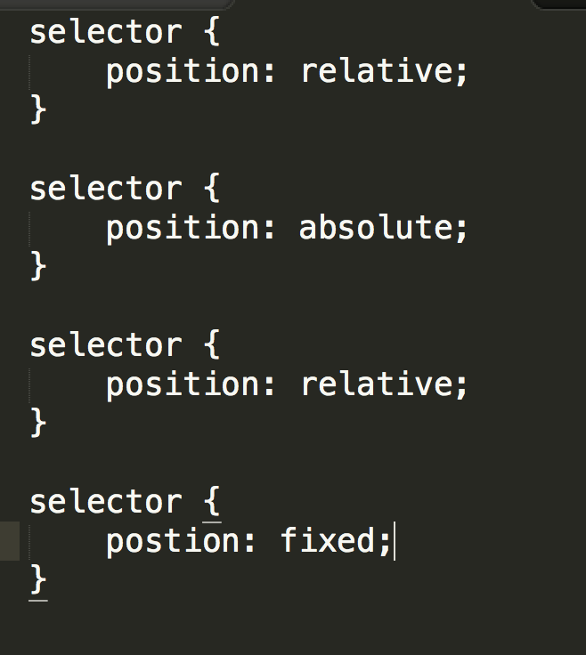

DBC Fiddler Crabs 2016 Blog
December 21, 2015
What are the differences between relative, absolute, fixed, and static positioning?
Relative positioning is what happens when you use the Cascading Style Sheets language to enhance a Hyper Text Markup Language element in a web page so that the element's emplacement on the page is based off the initial html tag on the page. Absolute positioning is when an element is placed based on it's nearest parent element with absolute positioning, unless it does not have a parent element with absolute positioning, in which case it's position is relative. Fixed positioning is when an element is "glued" to the screen, that is, it doesnt move when you scroll. Like an annoying pop up that won't go away. Static positioning is when an element is just plopped on a page. You can find an additional resource here.
